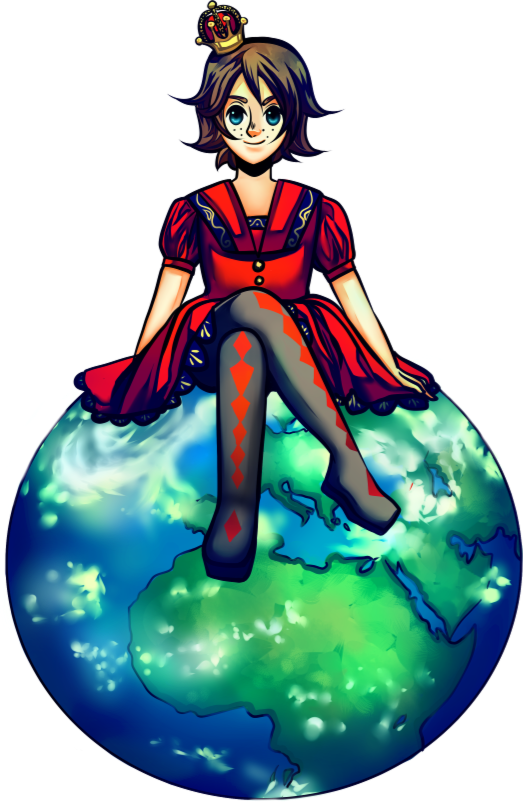

Popularity and Power - We All Want It!
But where does it come from?
Build relations and grow your network.
Depending on your actions people will like you, become your friend, or just flat out hate you.
The only stats in the game is for the relations. But you don't have to play nice, mean people also get ahead.
Explore the outcome of your choices, how they affect you and the people around you.
Each timeline visualizes your story. Jump back in time and try another decision.
Discover a non-linear story structure with several endings, each with its own twist and lesson learned.
Interact with the characters through dialogue based gameplay.
The game will indicate which options excludes others. Unlock choices by understanding what characters want.
A lot of effort has gone into making the characters react in a believable way, also long after the original choice was made.
Meet 10 great new characters with a colourful and unique personality.
The characters are brought to life in the beautiful illustrations of Malin Berg and in the written dialogue.
Eli will share her thoughts with her beloved diary. And she is happy for you to read it too.
Platform: Windows
Resolution: 800x450
Developer: Jerome Games AB
Genre: Networking Adventure Game
Release date: 2017-05-01